WIRED
A wordmark that never looks the same twice. One point moves every minute.
WIRED describes itself as always evolving, so a fixed logo felt like the wrong answer.
I built it in p5.js. The wordmark moves a single anchor point every minute, seeded by the time itself, so every moment of the day has exactly one version of the logo. Past moves linger as fanned traces of the letters.
Colours are pulled from the day's image, or any poster you drop in, and deepen from noon to midnight. Scroll to move through the day.
A logo can be a rule instead of a shape. Once the rule is clear, every cover, screen and tote is a new frame of the same mark.
Under Talia Cotton (Cotton Design) · Fall 2025
[p5.js, JavaScript, Figma, Adobe Illustrator, Adobe Photoshop]
A logo usually freezes a brand at one moment. WIRED covers what comes next, so the mark should keep moving.
Each letter is a handful of anchor points on a grid. Every minute one point steps somewhere new, seeded by the time itself, so there is exactly one WIRED for every minute of the day. Earlier positions stay behind as thin fanned traces, a record of how the mark got here. The palette comes from the day and deepens toward midnight.
From that one rule the rest of the identity follows: a favicon that is a single W, print covers that hold one moment still, and merchandise that carries a frame of it.

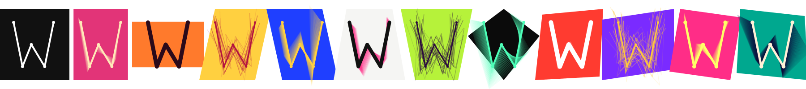
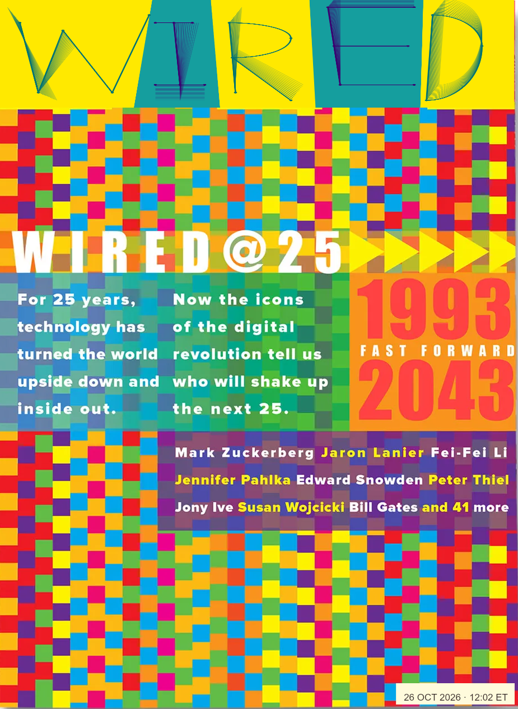
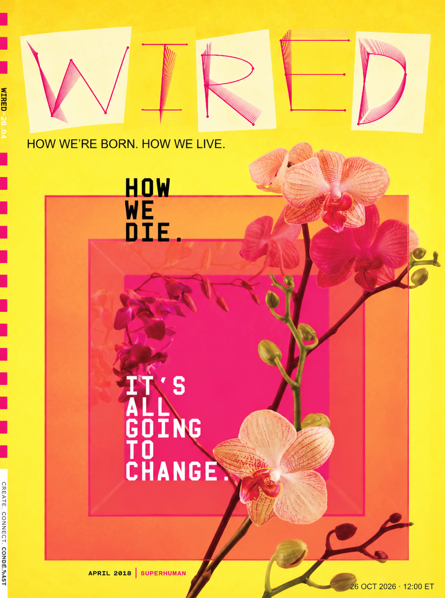
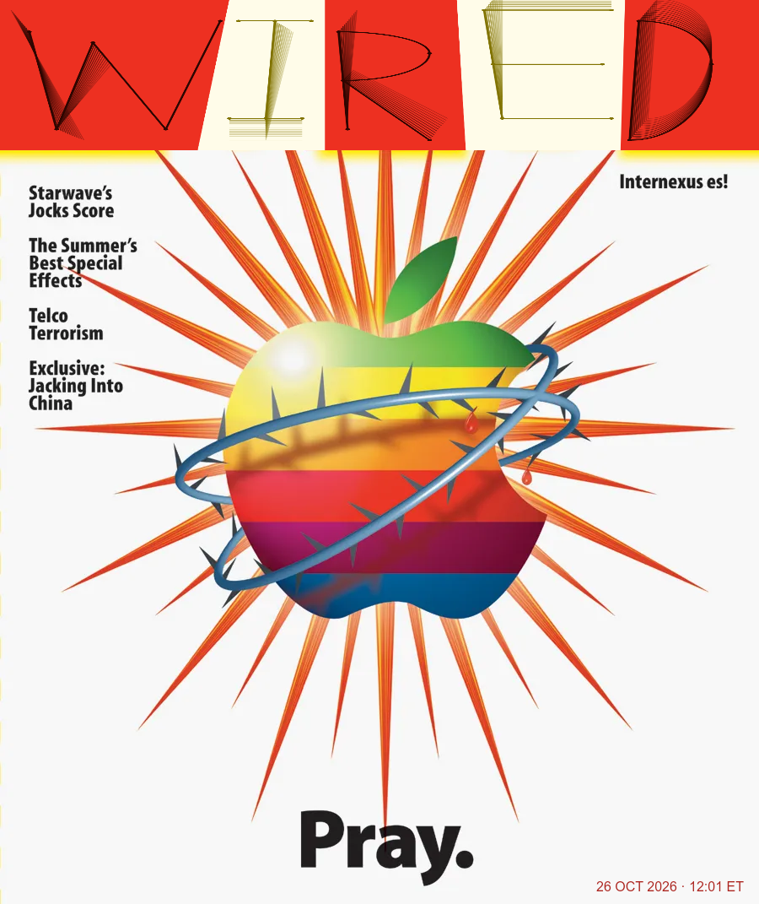
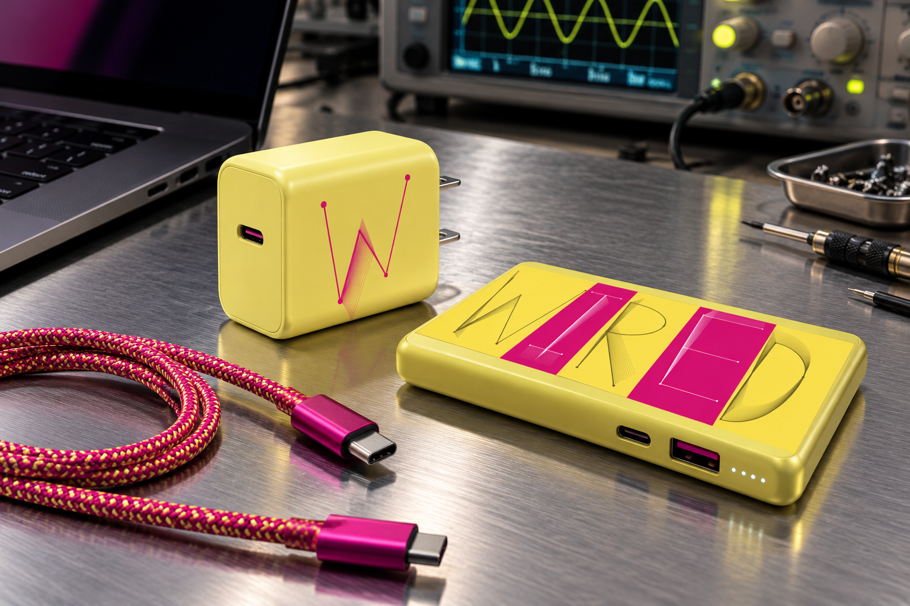
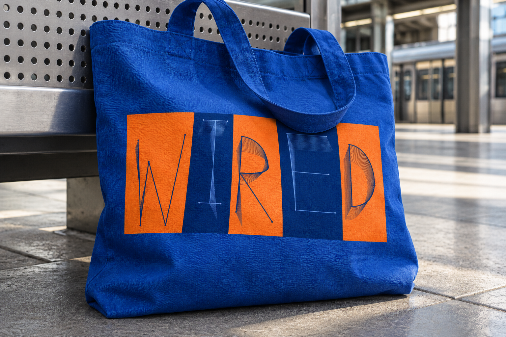
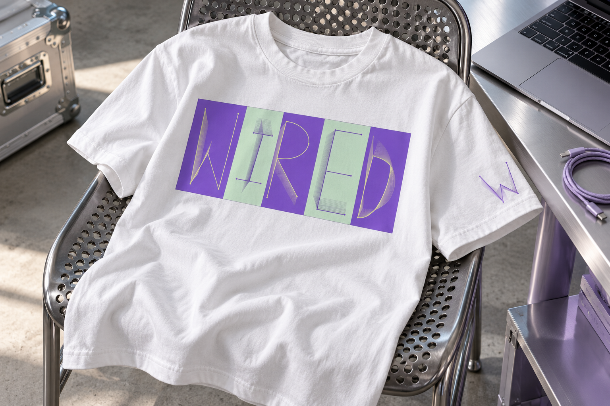
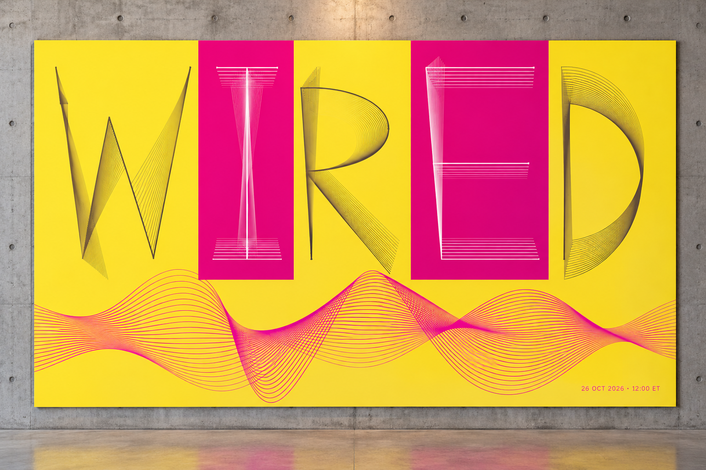
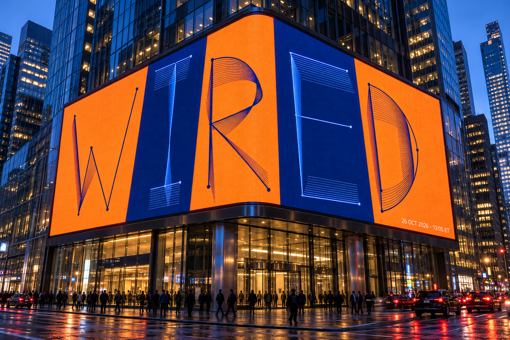
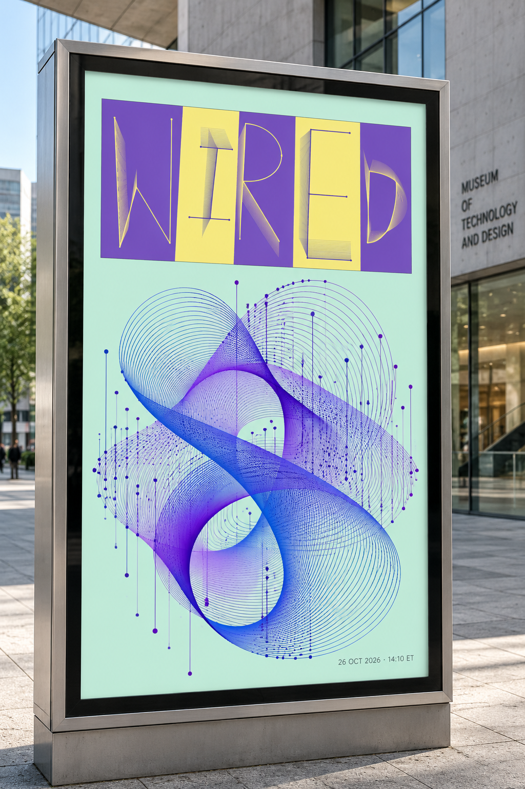
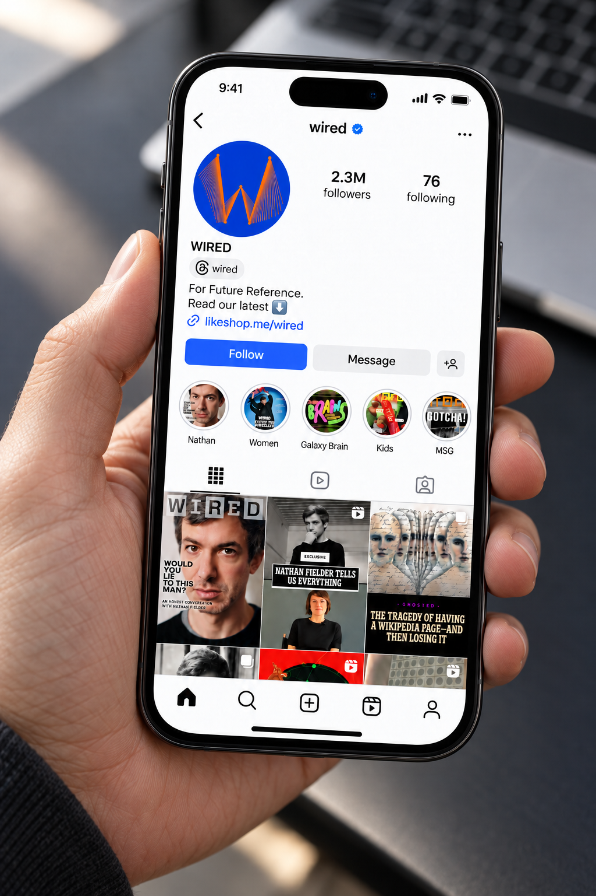
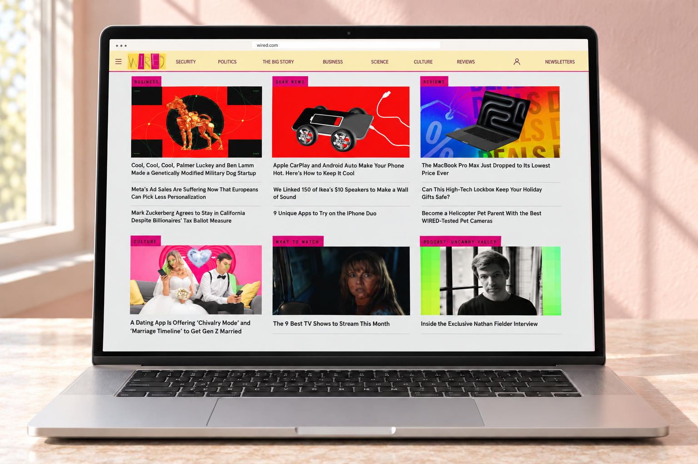